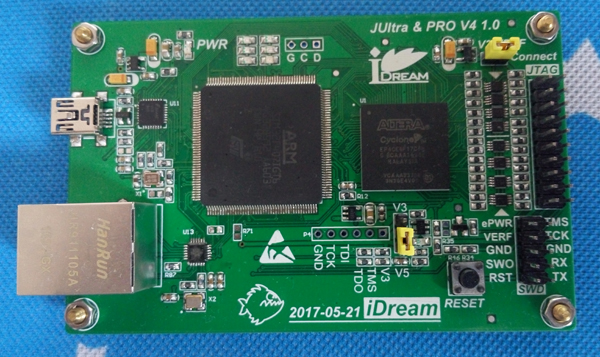
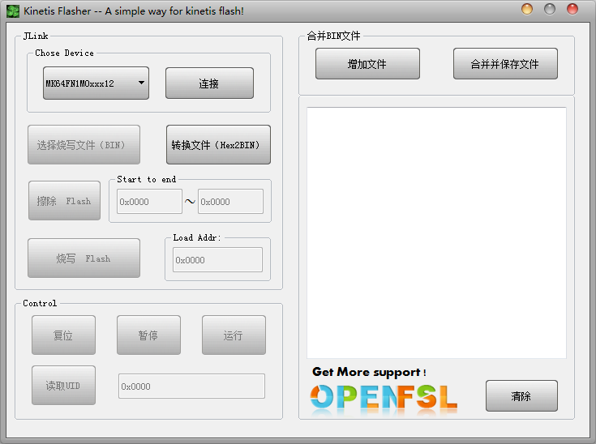
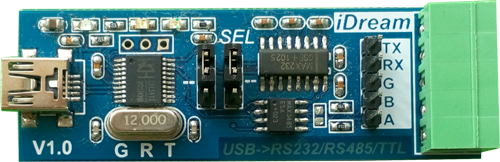
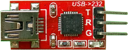
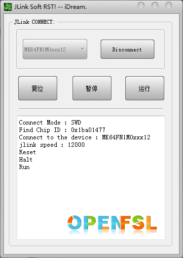

工欲善其事，必先利其器！
--记我最好用的开发工具--
Jlink -- JLink Ultra V4 ：
高速USB，JTag速度最高50 000K！快的有点狠！最好用的Debug工具之一！
- Max Speed 50000.
- 支持虚拟串口
- 目标电压检测，1.2V ~ 5.5V系统仿真下载！
Jlink -- JLink V9 ：

相比于爱掉固件的Jlink V8来说，V9稳定多了，下载速度也支持到了12000，至少可以设置speed 12000。最主要的：同时支持虚拟串口！这对于仿真加调试来说真是太方便了！于是就有了经典五针：DIO、CLK、GND、RX、TX。对于一般的芯片来说这五针就可以了，但有时发现如果没有硬件复位，程序很难下载或者无法识别目标芯片，于是就保留了RESET，同时把SWO也留了出来，在某些时候可以通过SWO做printf，直到SEGGER_RTT的出现，这个管脚可以彻底解放了！但我还是喜欢使用串口做printf，简单易用，也易于交互。
让仿真调试 更简单、更易用！
- Speed 12000.
- 支持虚拟串口
- 3.3V、5V系统仿真调试，毫无压力！
- 不掉固件，自动升级
Kinetis Flasher – A simple way for kinetis flash!
为小批量用户设计的Kinetis简易下载工具，只需简单几步便可完成烧写。
一、选择芯片型号，选择待烧写的BIN文件。
二、连接仿真器：（烧写工具使用Jlink）
三、擦除Flash（可指定擦除位置）
四、写入Flash（可从指定的位置开始烧写）
UPDATE：增加Hex文件转换为BIN文件、合并多个BIN文件等。更多详情请参考 ：>>> BBS - Flasher
USB转RS232/RS485/串口TTL
串口调试工具几乎是日常使用中最常用的工具，RS232及RS485通信简单，于是就使用CH340做了这个小工具，通过跳线可以选择RS232、RS485.
可惜CH340的TTL电平居然是5V的，所以如果使用它调试3.3V TTL电平的串口设备，对于那些抗不住5V的单片机来说，比较头疼。于是就有了它---：

一个更加小巧的USB转串口TTL的小工具：（CP2102）
调试利器中的战斗机。
Jlink Reset – A simple way for Soft Reset！
调试硬件时常常需要复位目标芯片，板子上如果有Reset按键还好，如果没有每次断电上电太麻烦。
或者可以打开Segger命令行，输入R执行Reset，输入G运行，每次这样搞也很麻烦，于是就搞了它：
仿真器连好后开着就可以了，需要复位时点下即可。
支持复位、暂停、及运行命令。
---- 增加一个实用速查-----